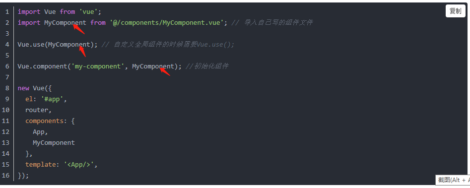
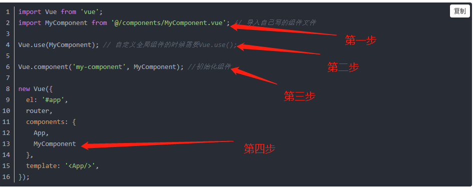

引入全局组件步骤： 第一步、在main.js中，引入App.vue的下面引入全局组件：

第二步、使用Vue.ues(组件变量名) 这里的参数是使用import引入时候使用的变量名例如上面的截图中红色箭头只想的内容就是。 第三步、使用Vue.component('compontnt',组件变量名) 初始化组件； 第四步、在new Vue()中的components选项中加入引入组件的变量名称，如下图： 